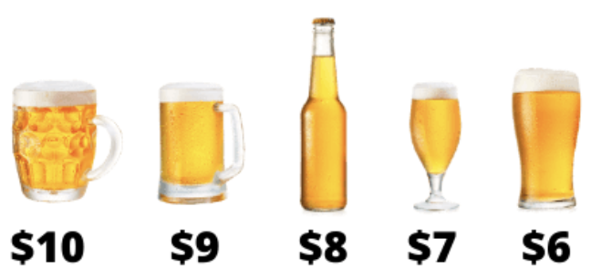

| Tipo | Precio de venta |
|---|---|
| Chocolate | 5500 |
| Cappuccino | 6300 |
| Café Mocca | 6800 |
| Mocca con Chocolate Blanco | 6950 |
| Cappuccino 20onz | 7200 |
Principios de Microeconomía
Carlos A. Yanes Guerra
Universidad del Norte
Website: https://carlosyanes.netlify.app/
Estrategias de precios
Pilares de precios
Pilares de precios
Costo
Los costos son uno de los factores más comúnmente reconocido en una estrategia de fijación de precios y suelen fijar el precio mínimo. -Si no son todas- la mayoría de empresas fijan su estrategia a partir del costo que tiene cuando produce o comercializa algo
- Costos directos
- Costos indirectos
Pilares de precios
Valor de compra
Los compradores siempre valoran los bienes y servicios de acuerdo a la disposición a pagar. Desde luego a mayor disposición mas oportunidad hay de compras y desde luego es una opción muy fuerte de convencer y de extraer el excedente del consumidor.
- Valor
- Funcionalidad
- Adquisición
Pilares de precios
Precios de referencia
Los clientes raramente toman decisiones con el solo precio. Tienen en cuenta múltiples formas, factores y maneras para finalmente comprar un producto o servicio. Cualquier detalle “extra” es plausible de ser tomado para cobrar un precio mayor y el cliente finalmente acepte, la comparación con los precios de la competencia será relevante.
- Forma de pagos
- Referencia
- Justicia
Pilares de precios
Proposición de valor
El valor adicional o agregado de un producto va envuelto en las condiciones de la forma de poder cobrar mas y así el beneficio sea mejor. Las empresas adicionan un punto que hace distinto el producto de las comparaciones comunes que aplican los consumidores/compradores.
- Confianza
- Referencia
- Poder
Pilares de precios
Pilares de precios
Ecosistema de precios
Estipulación natural del precio

Estipulación del precio en pilares
Estipulación del precio creando valor
Estipulación del precio creando valor
Una segunda forma
Precios por visión
Precios por visión
| Tipo | Precio de venta |
|---|---|
| Chocolate | 3500 |
| Cafe con crema | 4100 |
| Café con leche | 4300 |
| Café, leche y Chocolate Blanco | 4625 |
| Café con leche 20onz | 5100 |
Generalidades
A tener en cuenta
- Cada empresa implementa su estrategía de acuerdo a lo que observa que hacen los demás
- Desde luego aquella que tiene mucho poder de mercado estipula propiamente sus precios porque no hay competencia cerca e inclusive no la posee (caso monopolio).
- La estrategia mas fácil es la que va por establecer el precio a partir de los costos y mark-up que posee.
Usando las ventas para evaluar
Decisiones de precios
- La idea que el crecimiento de las ventas es la medida propia de las empresas, ya que esta estipulado en las mentes de los gerentes
- Cuando se compara con otras marcas o competencia y algunas tienen que ver con el nivel de lealtad
- Si la empresa conoce su beneficio marginal, el deseo o cambio esperado en ventas será usado de forma precisa
Pregunta !!
- Si se da un 10% de descuento del precio del lubricante que actualmente esta en $21.000 y hay un margen de ganancia estipulado del 50%. ¿Cuál es el incremento mínimo del volumen de ventas que necesitará la empresa para aumentar su beneficio sin afectar el nivel actual?
Ventas
- Vamos a usar lo siguiente:
- La formula es: \[\text{Volumen % de ventas}= \dfrac{\text{- Cambio % en el precio}}{\text{Margen}+\text{Cambio % en el precio}}\]
Interpretación: Después que: \((-10\%/50\%+(-10\%))=25\%\) “Si hay un descuento del 10%, la estación de servicio debe incrementar el cambio de aceite (ventas) en un 25%”.
Ventas
Ingreso marginal
Actualmente una empresa vende 40 jabones a un Precio de $100, pero la curva de demanda nos dice que para comprar un jabon adicional debemos bajar el precio a P=99. ¿Cuánto es el ingreso marginal de esa firma?
Ingreso marginal
Aquel ingreso adicional que optiene la firma por vender una unidad adicional
- Ingresos de antes: 40 x
$100=$4000
Los ingresos de… ahora: 41 x $99=$4059
El ingreso marginal es $59. Miren que el \(Img < Precio\).
¿Debe vender el jabon adicional?
Segmentación en precio
- Imagine lo siguiente:
| DAP A | DAP B | |
|---|---|---|
| Segmento X | 30$ | 125 |
| Segmento Y | 50 | 100 |
- Note que los del segmento X valoran mucho mas el producto B que los del otro Segmento. Pero en cambio los del segmento Y valoran mas el producto A.
- Como establecer el precio correcto para cada segmento?
Segmentación en precio
Si el producto A se vende en $50 solo el segmento Y lo comprará y el beneficio por unidad será de $50.
En cambio si lo vende en $30 lo compraran ambos segmentos y su beneficio será de $60… va ganando por ahí
Ahora, si hacemos lo mismo con el producto B y se ofrece a un precio de $100 la empresa ganará $200 que en lugar de solo $125
Mire que si vende así, su ganancia total es de $260
Segmentación en precio
Considera que es suficiente eso? puede la empresa hacer mas dinero ?
La respuesta es si!!
Estrategia tipo cesta
La empresa puede vender de forma combinada, es decir, ofrecer ambos producto en combinación, paquete o comunmente le dicen “combo”.
Segmentación en precio
Sumemos las valoraciones de cada segmento. El Grupo X \(30(A)+125(B)=155\) y para el segmento Y es de \(50(A)+100(B)=150\), entonces podemos cobrar un precio de $150 y la empresa venderá (A+B) productos y de esa manera su ganancia por combo será de $300 y este es mucho mejor beneficio que los $260 que anteriormente ganaba.
La noción de precios por suscripción y planes en combo es mucho mejor en la disponibilidad a pagar y ofrecer paquetes. De esa manera extrae mejor el excedente de los consumidores.
Ejercicio
- Regresemos al ejemplo de la disponibilidad:
| DAP A | DAP B | |
|---|---|---|
| Segmento X | 30$ | 160 |
| Segmento Y | 40 | 140 |
| Segmento Z | 60 | 130 |
Qué estrategia de precios es correcta?
Psicología de precios
Psicología de precios
Precio charming
Es la preferencia de establecer un dígito menos a la izquierda de la cifra. P.e: \(3.00\;\rightarrow \;2.99\) o \(13.000\;\rightarrow \;12.990\)
Precio de prestigio
Es la preferencia de establecer un digito mas a la izquierda de la cifra. Es lo contrario a la definición anterior P.e: \(4.99\;\rightarrow \;5.00\) o \(15.990\;\rightarrow \;16.000\)
Psicología de precios
Pague 1 lleve 2
Preferencia tradicional haciendo ver al consumidor que lleva una ganga. El objetivo de ofrecer la segunda unidad gratis cuando en realidad estan vendiendo un solo producto.
Comparativo
Establecen dos productos similares uno al lado del otro pero con precios diferentes. El consumidor al verse enfrente cree que es mejor llevarse la promoción
Psicología de precios
Psicología de precios
- Hay por comparación de tamaño
- Ubicación en estanteria
- Lado derecho
- Orden de menor a mayor

Trabajo
Trabajo de clase
Piense en una estrategia de precios (escoja solo una) para cierto producto que desee impulsar o llevar al mercado
Es totalmente individual
La sesión de sustentación es corta no puede excederse en tiempo
Adjunte su poster en el brightspace
Gracias! por su atención
Alguna pregunta adicional?
Slides de la clase:
Bibliografía
Mankiw, N. G. (2005). Principios de microeconomía /N. Gregory Mankiw (No. 338.5 M55Y.).
Pindyck, R. S., Rubinfeld, D. L., & Rabasco, E. (2013). Microeconomía. Pearson Italia..
Krugman, P., & Wells, R. (2014). Microeconomics (for AP). New York: Worth Publishers.
Muñoz-Garcia, F. (2017). Advanced microeconomic theory: an intuitive approach with examples. MIT Press.